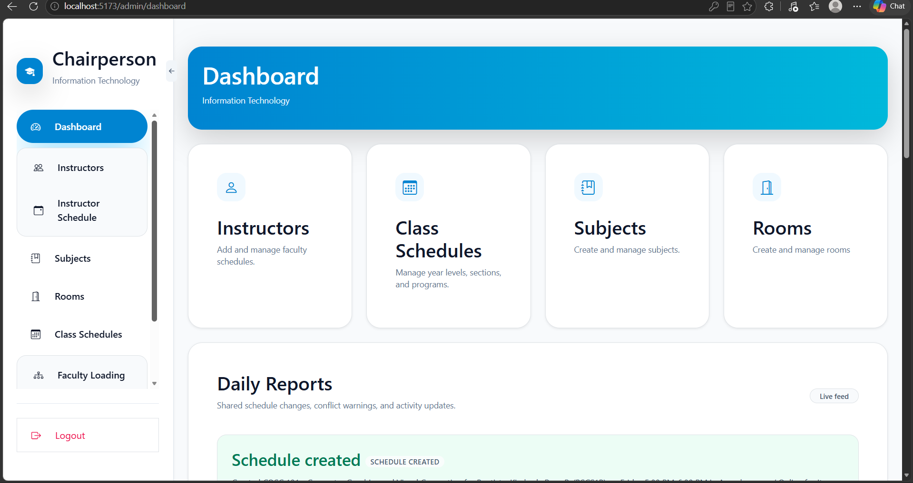
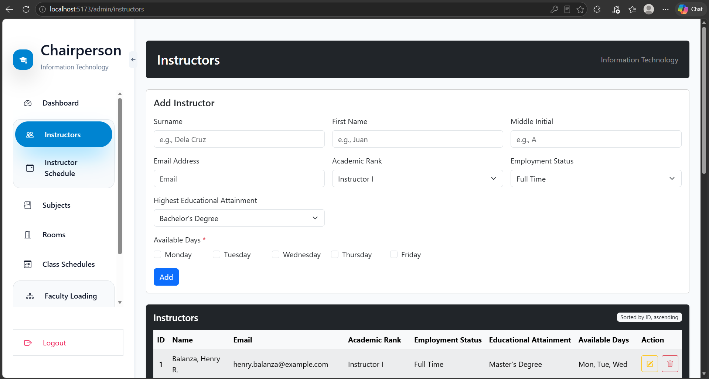
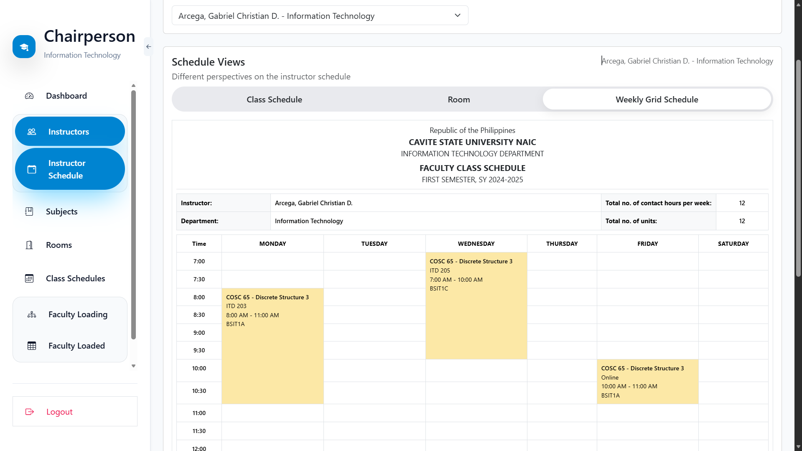
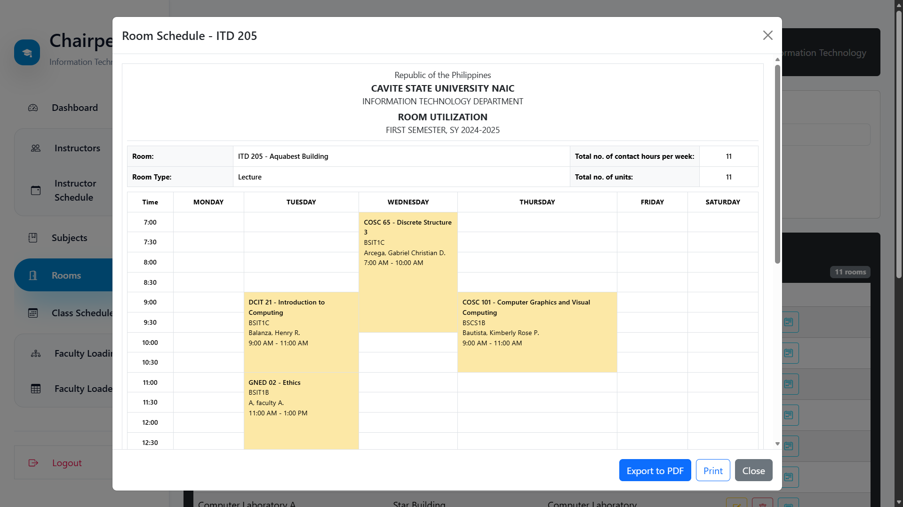
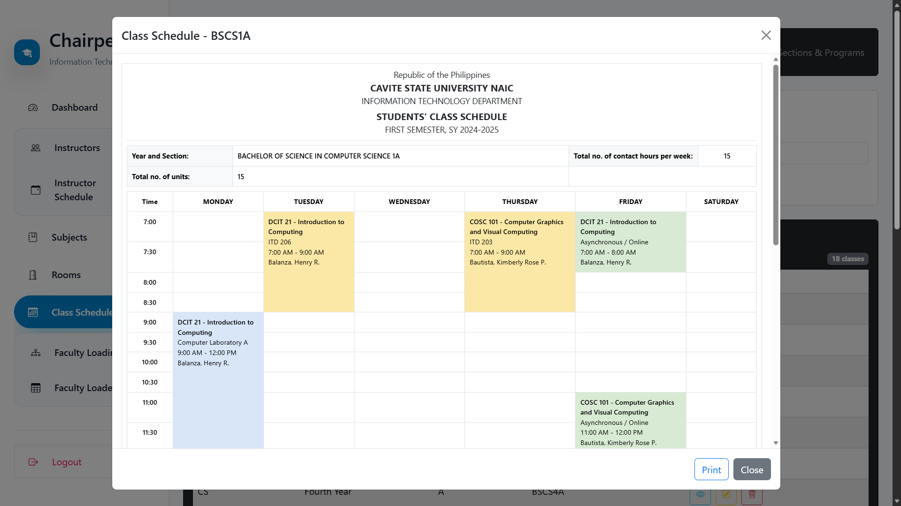
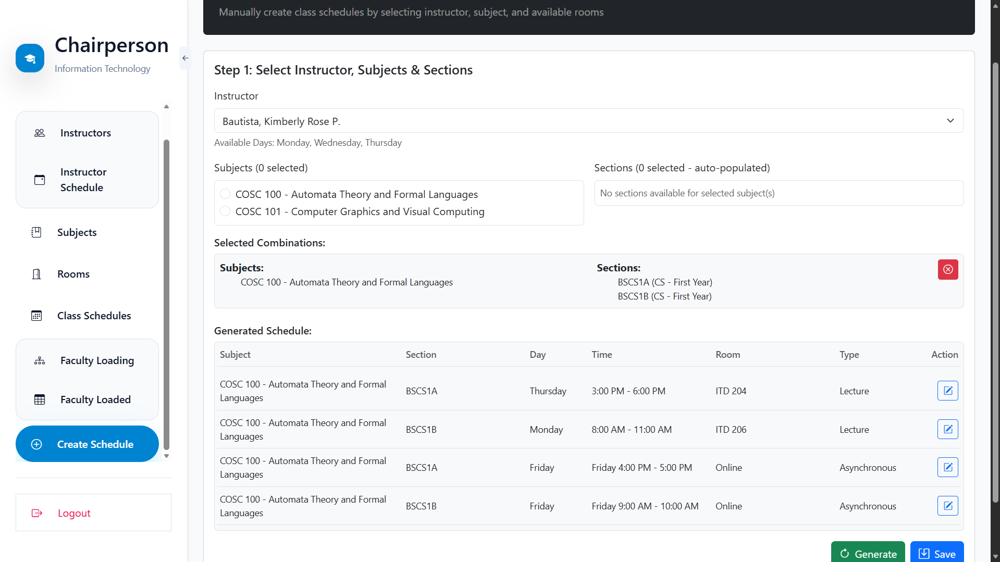

I'm Kim Arvin Pinili
Aspiring Web Developer
I build web applications that solve real-world problems. Passionate about software development, UI/UX design, and creating efficient systems through modern technologies.


About Me
Passionate about technology, problem-solving, and building digital solutions.
Graduating IT student passionate about software development, web technologies, and building digital solutions that solve real-world problems.
HTML, CSS, JavaScript, React, Tailwind, Bootstrap, Node.js, Java, PHP, MySQL, Git, Github, Figma, Visual Studio Code, Antigravity, Claude
Services
Everything is styled to feel polished and dimensional.
A focused set of services designed to help brands look sharper, move smoother, and convert better.
Software Engineering
Transforming ideas into functional applications through problem-solving, programming, and continuous learning.
Web Development
Modern, performant, accessible websites and apps that look great on every device.
Creative Design
UI/UX design, prototyping, and micro-interactions with a focus on usability.
Portfolio
Under Development






Contact
Let’s build something sharp, premium, and memorable.
Phone: +63 9614239893
Email: kimarvinchosen@gmail.com
Location: Cavite, Philippines